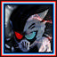

Player profile
lcalter
Rank #12server.eurobattle.netSeason 2
Most played · Ragna
Matches62 wins · 4 losses
Win rate33%
Avg K / D / A41.8 / 37.5 / 11.0
Avg APM106
Avg damage dealt262.8k
Avg damage taken161.0k
Heroes played
Explore heroes →| HERO | MATCHES | WIN RATE | AVG K / D / A | AVG DMG |
|---|---|---|---|---|
RagnaMost played | 1 | 100% | 55.0 / 35.0 / 9.0 | 279.5k |
Yondaime | 1 | 100% | 56.0 / 23.0 / 6.0 | 283.7k |
朱雀院 紅葉 | 1 | 0% | 25.0 / 54.0 / 13.0 | 264.6k |
黒鉄一輝 | 1 | 0% | 33.0 / 40.0 / 9.0 | 214.3k |
千子村正 | 1 | 0% | 35.0 / 34.0 / 18.0 | 243.6k |
 仮面ライダーゲンム | 1 | 0% | 47.0 / 39.0 / 11.0 | 290.9k |
Averages use recorded statistics only; unavailable historical values are shown as —.
Recent matches
Open a match for its scoreboard and kill matchups.
WIN68:29
MCB #2000169
22 Oct 2026 · 21:06 WIB
55.0 / 35.0 / 9.0View match →
LOSS76:34
MCB #2000168
21 Oct 2026 · 23:07 WIB
25.0 / 54.0 / 13.0View match →
WIN55:13
MCB #2000166
21 Oct 2026 · 02:45 WIB
56.0 / 23.0 / 6.0View match →
LOSS63:58
MCB #2000165
20 Oct 2026 · 23:43 WIB
33.0 / 40.0 / 9.0View match →
LOSS61:36
MCB #2000164
20 Oct 2026 · 22:30 WIB
35.0 / 34.0 / 18.0View match →
LOSS69:32
MCB #2000163
20 Oct 2026 · 20:16 WIB
47.0 / 39.0 / 11.0View match →